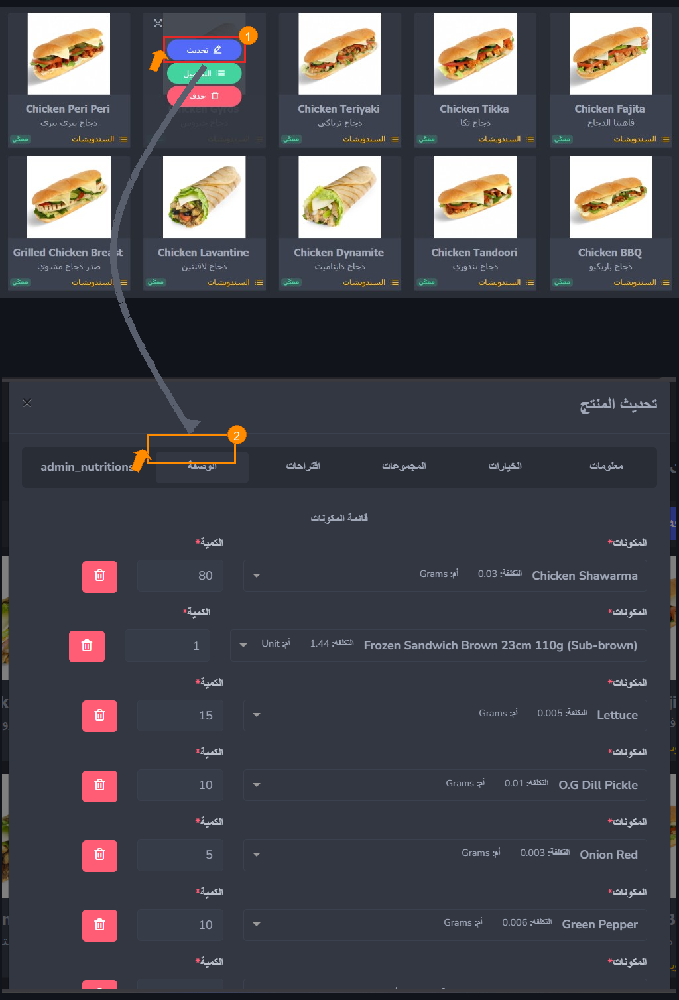

Overview
نظرة عامة
A supplier record is the system's reference for every vendor you
buy from. Once registered, a supplier can be selected on
purchase orders and receptions, giving you a full procurement
trail across all your buying activity.
سجل المورّد هو مرجع النظام لكل بائع تشتري منه. بمجرد تسجيله،
يمكن اختيار المورّد في أوامر الشراء والاستلامات، مما يمنحك سجل
مشتريات كاملاً عبر جميع أنشطة الشراء.
How to Create a Supplier
كيفية إنشاء مورّد
Navigate to
Menu → Stock → Suppliers and click
+ Add Supplier.
انتقل إلى
المنيو ← المخزون ← المشتريات ←
الموردين
وانقر على + إضافة مورد.
-
Name (Required): Enter the official or
recognized company name.
-
Optional Details: Contact Name, Phone, Email,
Address, and Location. Highly recommended to fill these out
now to save your purchasing team time when following up on
orders later.
-
الاسم (مطلوب): أدخل اسم الشركة الرسمي أو
المعروف.
-
تفاصيل اختيارية: اسم جهة الاتصال، الهاتف،
البريد الإلكتروني، العنوان، والموقع. يُنصح بملء هذه البيانات
الآن لتوفير وقت فريق المشتريات عند المتابعة لاحقاً.
Managing Your Suppliers
إدارة الموردين
Once saved, vendors appear in the Suppliers List, where you can
search, view, edit, or delete records.
بعد الحفظ، تظهر جهات البيع في قائمة الموردين، حيث يمكنك البحث
والعرض والتعديل والحذف.
-
Editing: Updates take effect immediately for
future purchase orders but will not alter past historical
records.
-
Deleting: Not recommended if the supplier is
tied to existing purchase orders. If you stop working with a
vendor, simply stop placing orders rather than deleting their
record.
-
التعديل: تسري التحديثات فوراً على أوامر
الشراء المستقبلية دون تغيير السجلات التاريخية السابقة.
-
الحذف: غير مُوصى به إذا كان المورّد مرتبطاً
بأوامر شراء موجودة. إذا توقفت عن التعامل معه، فما عليك سوى
التوقف عن تقديم الطلبات بدلاً من حذف سجله.
Best Practices for Setup
أفضل الممارسات للإعداد
-
Register everyone before moving on: You
cannot create a purchase order without an attached supplier.
-
One record per billing entity: If a company
sends separate invoices for different divisions, create two
records. If they send one combined invoice, one record is
enough.
-
Be consistent: Standardize how you name
suppliers across branches to keep reporting accurate.
-
سجِّل الجميع قبل المتابعة: لا يمكنك إنشاء أمر
شراء بدون مورّد مرفق.
-
سجل واحد لكل جهة فوترة: إذا أرسلت شركة فواتير
منفصلة لأقسام مختلفة، أنشئ سجلَّين. أما إذا أرسلت فاتورة واحدة
مجمَّعة، فسجل واحد يكفي.
-
كن متسقاً: وحِّد طريقة تسمية الموردين عبر
الفروع للحفاظ على دقة التقارير.
Overview
نظرة عامة
A recipe links a product to the ingredients it consumes. When a
product is sold at the POS, the system reads its recipe and
instantly deducts the exact ingredient quantities from stock at
the relevant branch.
تربط الوصفة منتجاً بالمكوّنات التي يستهلكها. عند بيع منتج في
نقطة البيع، يقرأ النظام وصفته ويخصم الكميات الدقيقة من المخزون
في الفرع المعني فوراً.
How to Access
كيفية الوصول
Navigate to Menu → Products, click the eye
icon or product name to open its details, and click the
Recipe tab.
انتقل إلى القائمة ← المنتجات، انقر على
أيقونة العين أو اسم المنتج لفتح تفاصيله، ثم انقر على تبويب
الوصفة.
Product-Level Recipe
وصفة على مستوى المنتج
This applies when a product is sold as-is, without variants or
options. The recipe is attached directly to the product and
represents the single, fixed set of ingredients consumed on
every sale.
ينطبق هذا عندما يُباع المنتج كما هو دون متغيرات أو خيارات. ترتبط
الوصفة مباشرةً بالمنتج وتمثّل مجموعة ثابتة من المكوّنات
المستهلكة في كل عملية بيع.
Example: A Chicken Fajita Sandwich always uses
the same bread, toppings, vegetables, and condiments.
مثال: ساندويش فاهيتا الدجاج يستخدم دائماً نفس
الخبز والإضافات والخضروات والتوابل.

A product-level recipe listing all ingredients and quantities
consumed per serving.
وصفة على مستوى المنتج تُدرج جميع المكوّنات والكميات المستهلكة
لكل حصة.
Option-Level Recipe
وصفة على مستوى الخيار
This applies when a product has options (e.g., size, milk type)
and each option consumes different ingredients or quantities.
You define a separate recipe for each relevant option.
ينطبق هذا عندما يحتوي المنتج على خيارات (مثل الحجم، نوع الحليب)
وكل خيار يستهلك مكوّنات أو كميات مختلفة. تُحدِّد وصفة منفصلة لكل
خيار ذي صلة.
Example: Hot Chocolate in sizes S, M, and L —
each uses a different cup and different quantities of milk and
cocoa powder.
مثال: الشوكولاتة الساخنة بأحجام S وM وL — كل
حجم يستخدم كوباً مختلفاً وكميات مختلفة من الحليب ومسحوق الكاكاو.

The option-level recipe form. Ingredients defined here are
consumed only when this particular option is selected.
نموذج الوصفة على مستوى الخيار. المكوّنات المحددة هنا تُستهلك
فقط عند اختيار هذا الخيار بعينه.
When to use each: Use a product-level recipe
when the product has no options, or when all options share the
same ingredients. Use option-level recipes when different
options consume different ingredients or amounts.
متى تستخدم كل نوع: استخدم وصفة على مستوى
المنتج عندما لا يحتوي على خيارات أو تشترك جميع الخيارات في نفس
المكوّنات. استخدم وصفات على مستوى الخيار عندما تستهلك خيارات
مختلفة مكوّنات أو كميات مختلفة.
Building a Recipe — Field by Field
بناء الوصفة — حقلٌ بحقل
-
Ingredient (Required): Select the raw
material from the dropdown (must be previously created in Step
02).
-
Quantity per Serving (Required): Enter the
exact amount used per serving. Work with your kitchen team to
measure actual portions.
-
Unit of Measure (Required): Must match the
ingredient's base unit OR have a valid conversion defined.
-
المكوّن (مطلوب): اختر المادة الخام من القائمة
المنسدلة (يجب إنشاؤها مسبقاً في الخطوة 02).
-
الكمية لكل حصة (مطلوب): أدخل الكمية الدقيقة
المستخدمة لكل حصة. اعمل مع فريق المطبخ لقياس الأجزاء الفعلية.
-
وحدة القياس (مطلوب): يجب أن تتطابق مع وحدة
المكوّن الأساسية أو يكون لها تحويل صالح محدد.
Common mistakes to avoid: Entering approximate
amounts permanently skews inventory. Avoid unit errors —
entering kilograms when the base unit is grams. Always update
the recipe immediately if the kitchen changes a portion size.
أخطاء شائعة يجب تجنبها: إدخال كميات تقريبية
يُشوِّه المخزون بشكل دائم. تجنب أخطاء الوحدات — إدخال الكيلوغرام
عندما تكون الوحدة الأساسية جراماً. احرص دائماً على تحديث وصفة
النظام فوراً إذا غيّر المطبخ حجم الحصة.